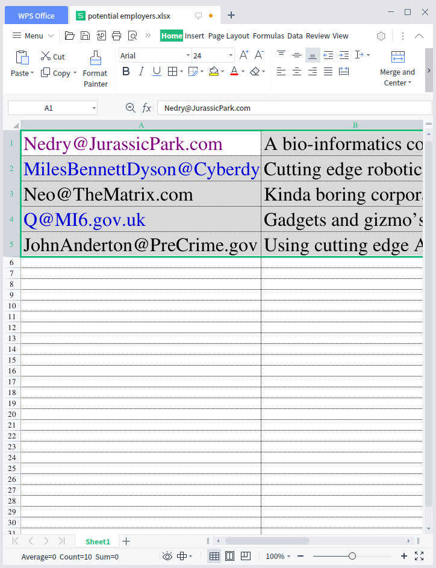
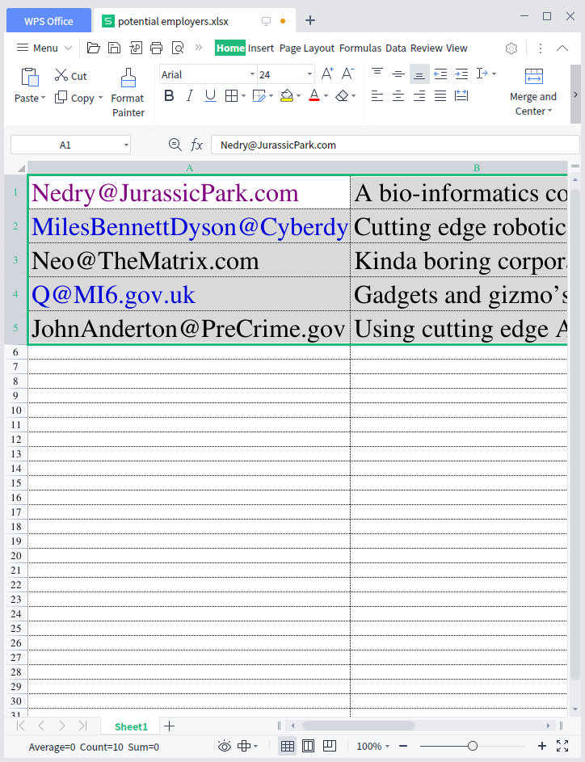
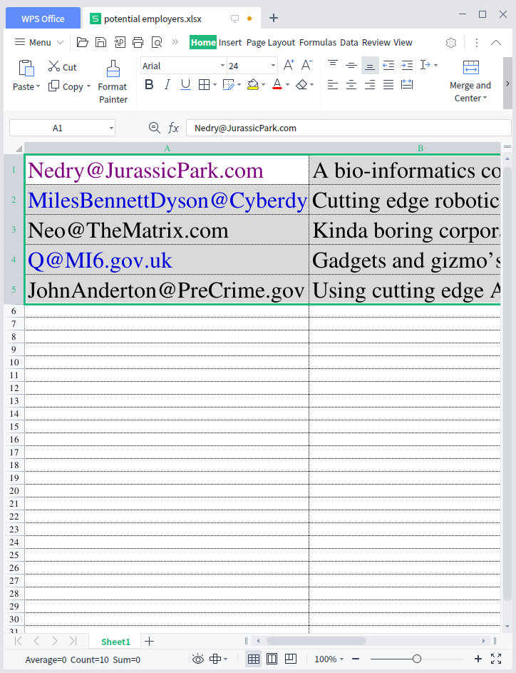

Aerome
A File Manager from the Future
About
Blog
Source
Download
resume as a markdown file
resume as a word file

employers
 resume as a markdown file
resume as a markdown file
 resume as a word file
employers
resume as a word file
employers